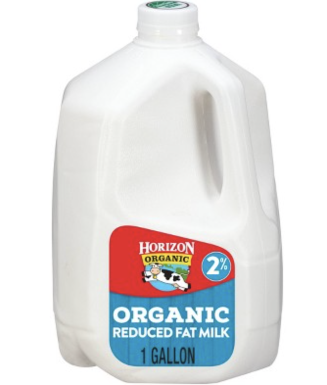
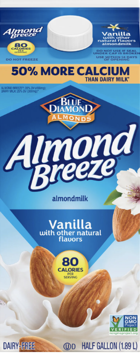

2% dairy milk is my personal favorite! It makes a nice creamy cheese sauce on the pasta and creates a divine bowl of mac and cheese.

Almond Milk! The cheese mixture doesn't mix well with almond milk, and I would avoid it at all costs.
